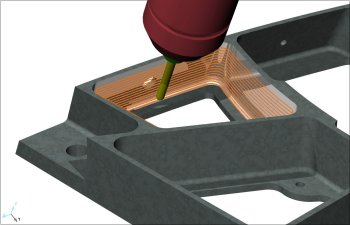

| DELCAM
PowerMILL "En iyi yazýlým" ödülünü aldý 15-19 Mayýs 2006 tarihleri arasýnda Ýngiltere Birmingham'da düzenlenen MACH2006 Fuarý'nda, sponsorluðunu Mori Seiki'nin yaptýðý Uluslararasý Metal Ýþleme ve Üretim Tezgahlarý Endüstrisi ödüllerinde PowerMILL, yüksek hýzla iþleme ve 5 eksen iþleme yetenekleri ile en iyi yazýlým kategorisinde ödül aldý.
En iyi yazýlým ödülü, PowerMILL'in en son versiyonuna eklenen 3 ve 5 eksen kaba ve finiþ operasyonlarýndaki yeni ve geliþtirilmiþ özellikler için verildi. Bu yenilikler ve geliþtirmeler arasýnda, akýllý dalma frezeleme, motor egzoz çýkýþ portlarýna özel 5 eksen iþleme stratejileri, 3 eksende swarf ve parametrik ofset iþleme ile birlikte çok hýzlý hesaplama zamanlarý ve kolay data yönetimi bulunmaktadýr.
Jürinin PowerMILL hakkýnda diðer görüþleri;
DELCAM adýna ödülü alan Peter Dickin yaptýðý konuþmada PowerMILL'in böyle prestijli bir ödülle ödüllendirilmesinden hoþnut olduklarýný belirtti ve DELCAM'ýn ürün geliþtirmeye çok kaynak ayýrdýðýný, geliþtirici ekibin harcadýðý büyük eforun bu þekilde geri dönmesinin sevindirici olduðunu bildirdi...
|
TurkCADCAM.net ilan servisi: www.TurkCADCAM.net/ilan
Not: Resim ve yazýlarý hatasýz görmek için aþaðýdaki sayfayý ziyaret ediniz:
http://www.turkcadcam.net/ilan/html/cagcadcam-01